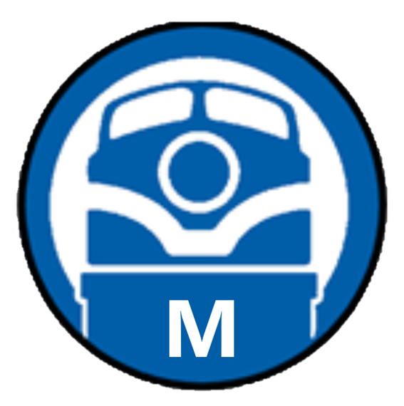

Trenes Moreno


La feria se celebra el primer domingo de cada mes (excepto agosto) se celebra en el museo del ferrocaril la feria del modelimos ferroviaro donde puedes vender, cambiar y vender tus maquetas de todas las escalas.
Ya está a la venta el último número de la revista 'Traccion'. Con ocasión del 75.° aniversario, desde la Asociación lanzan una edición especial de la revista para socios y simpatizantes.
HUELVA2021 es un proyecto que llega al Puerto de Huelva con una gran exposición de modelismo ferroviario. La presidenta del puerto, Pilar Mirandaha, ha agradecido a la Asociación Club Ferroviario de Huelva la organización de esta exposición en el Puerto.
Este reencuentro de maquetas ferroviarias, en el que participan fabricantes y aficionados de toda España, quiere reunir el mayor número de modelos de los últimos 10 años: 300 metros de vías a escala (que equivalen a 27 kilómetros reales) y cerca de 60 módulos construidos por apasionados del coleccionismo. Se pueden admirar reproducciones de ferrocarriles que cruzan toda la península.
Las impresionantes maquetas serán las muestras de las últimas novedades del modelismo ferroviario que llega a Madrid de la mano de modelistas, tiendas y fabricantes tanto de España como de Portugal, que estarán presentes con diferentes stands del viernes 12 al domingo 14 de noviembre en el Pabellón de Convenciones del Recinto Ferial Casa de Campo.